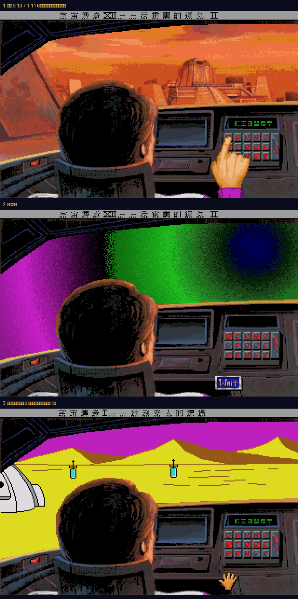

按下符號、送出，看看會被丟到哪裡。座標表直接從遊戲的 script.531 反組譯取得，並在實機上按過確認。
回到 《宇宙傳奇 IV》繁體中文化
遊戲的鍵盤共 15 個符號，排成 5 欄 3 列。它們沒有對應的英數字，只能照樣子按——這也是為什麼線上先試一遍比較不會慌。
這幾組寫死在遊戲程式裡，每個人、每一輪遊戲都一樣。
回黑暗未來氙星那組座標，是每次開新遊戲即時亂數產生的。
script.803 就跑了這段：最後一個符號固定，前面五個各叫一次
Random(0,14) 塞進全域變數 174–178。時空艙儀表板顯示的就是這組值。連續輸入三組座標（共 18 個符號）會通往一個房間，裡面堆滿了「因為法律理由被 Sierra 從遊戲裡拿掉的東西」。
script.271）被移除了，只剩下背景圖（pic.570）和對白（message.271）
留在資源裡——原版跑到這裡會直接當掉。ScummVM 偵測到沒有 script.271 就會停用這組座標，所以按下去只會沒反應，不會壞掉。反組譯讀出來的東西，還是得按過才算數。用 ScummVM 的除錯器跳進時空艙，照表按下尤倫斯荒原那組：

引擎啟動 → 時空亂流 → 黃色沙漠，狀態列跟著變成《宇宙傳奇 I — 沙利安人的邂逅》。
第一次照表值原樣輸入被判無效，才發現顯示格是由右往左編號（local[20] 是最右邊那格，
x 座標 289 − t×7），反過來按就對了。本頁列的都是反轉後的按鍵順序。
不是抄社群整理，是把遊戲資源拆開讀出來的。步驟都可以自己重跑：
heap.531 → 15 顆按鍵座標 script.531 → 兩張比對表 view.531 → 符號圖 pic.NNN → 目的地畫面
時空艙是 531 號房。heap.531 的 local 變數裡，L27–L56 是 15 顆按鍵的螢幕座標（5 欄 × 3 列），
L57 之後每 6 個一組就是一條座標。script.531 裡有兩個比對函式，把顯示器上 6 個符號逐一跟表裡的值比，
對上就跳對應的房間號。細節與反組譯工具見
完整分析文件。